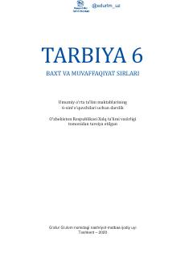

6T6-sinf o'quvchilari uchun mo'ljallangan axloq va tarbiya darsligi.
Ushbu darslik umumiy o'rta ta'lim maktablarining 6-sinf o'quvchilari uchun mo'ljallangan bo'lib, o'quvchilarda Vatan bilan faxrlanish, odamiylik, axloq va ma'naviy qadriyatlarni shakllantirishga xizmat qiladi. Unda turli hayotiy misollar, hikoyalar va topshiriqlar orqali yoshlarning dunyoqarashini kengaytirish ko'zda tutilgan.